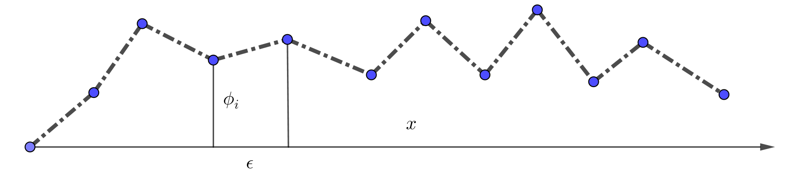

Susskind's Classical Field Theory Note
Information
- 视频列表地址: https://www.youtube.com/playlist?list=PL4D780620B14F1568 ( 每一 集的标题都是 Special Relativity, 感觉不态恰当, 主要内容还是 Classical Field Theory)
- Book: Leonard Susskind Art Friedman, Special Relativity and Classical Field Theory
- 把主要内容整理一下.
Lecture 1: Special Relativity
Galileo Trans
考虑一维的运动, 选取坐标系 $xOt$ . 另一坐标系 $x'O't'$ 相对 $xOt$ 以 $v$ 向右运 动. 如图

在红点处发生某个事件, 在 $xOt$ 坐标系中的坐标是 $x, t$ . 在蓝色线的所有的点的坐 标在两个坐标系中分别为 $x = vt$ , $x'=0$ .
所以在 Galileo 变换下, 它的时间是一样的, 所以红点在 $x'O't'$ 系中的坐标是 $x' = x - vt, t' = t$ .
Lorentz Trans
但是 Maxwell 方程给出光束 $c$ 在不同的惯性系中应该是相同的. 那假设在所有惯性系中 都取 $c = 1$ . 描述光的运动的方程为, $x = t$ 或者 $x = -t$ 两种可能, 也就是说, $x^2 = t^2$ . 在 $x'O't'$ 系中为 $x' = t'$ 或者 $x' = - t'$ , 也就是 $x^2 = t^2$ . 也就是说
$$\begin{align} x^2 - t^2 = x'^2 - t'^2 \end{align}$$Hyperbolic
对于普通的二维的旋转, 坐标的变换为
$$\begin{align} x' =& x \cos\theta + y\sin\theta \\ y' =&-x \sin\theta + y\cos\theta \end{align}$$在这种变换下长度 $s^2= x^2 + y^2$ 是不变的.
受此启发, 希望找一个变换使得 $x^2 - t^2$ 是不变量, 并且在低速下回到 Galileo 变换的 形式. 它就是 hyperbolic
$$\begin{align} x' =& x \cosh \omega - t \sinh \omega \\ t' =& -x \sinh \omega + t \cosh \omega \end{align}$$可以验证 $x^2 - t^2 = x'^2 - t'^2$
这就是 Lorentz 变换. Susskind 还解释了为什么叫 Hyperbolic functions. 因为 $\sin ^2\theta + \cos^2\theta = 1$ , 以 $\sin \theta, \cos \theta$ 为坐标, 那画出来就是个圆. 而 $\cosh ^2\omega - \sinh^2\omega = 1$ , 相应的画出来就是双曲线.
Represent by Velocity
上述的变换是用 $\omega$ 表示的. 那它与速度 $v$ 的关系呢?
还是回到本节最开始那张图. 由定义知道蓝线上的坐标为 $x = vt, x' = 0$ (定义, 两个 坐标系以速度 $v$ 相对运动). 而 $x' = x \cosh \omega - t \sinh \omega$ 所以 $v = \frac{\sinh \omega}{\cosh \omega}$ 那么
$$\begin{align} v^2 = \frac{\sinh^2\omega}{\cosh^2\omega} =& \frac{\cosh^2\omega - 1}{\cosh^2\omega} = 1 - \frac{1}{\cosh^2\omega}\\ \Downarrow&\\ \cosh\omega =& \frac{1}{\sqrt{1 - v^2}} \\ \Downarrow&\\ \sinh\omega =& v\cosh \omega = \frac{v}{\sqrt{1 - v^2}} \end{align}$$光速 $c$ 可以通过量纲分析找回, 就得到了最熟悉的形式.
Proper Time
对于 $xOt$ 坐标系中任意一条曲线, 定义的 proper time
$$\begin{align} \mathrm{d}\tau = \sqrt{\mathrm{d}t^2 - \mathrm{d}x^2} \end{align}$$它在不同坐标系中是相同的.
Lecture 2: From Particles to Field: a String
Euler-Lagrange Equation
回顾经典力学中的 Euler-Lagrange Equation.
比如许一维多粒子在势 $U(q)$ 中运动, 那么 Lagrangian 为
$$\begin{align} L = T - U = \sum_i \frac{1}{2}m_i\dot{q}_i^2 - U(q) \end{align}$$index $i$ 表示第 $i$ 个粒子. 它们的运动满足 Euler-Lagrange Equation
$$\begin{align} \frac{\mathrm{d}}{\mathrm{d}t} \frac{\partial L}{\partial \dot{q}_i} - \frac{\partial L}{\partial q_i} = 0 \end{align}$$A String
考虑由弹簧连接的许多质点. 它们只能垂直于 $x$ 运动. 记它们离 $x$ 轴的距离为 $\phi_i$ .

相邻的点间隔 $\epsilon$ . $\epsilon$ 是与每个点的质量成正比的, 因为总质量一定的前提下, 分得 越细, 每个点的质量就越小. 因此动能为如下形式
$$\begin{align} T = \sum_i \frac{1}{2}\epsilon \dot{\phi}_i^2 \end{align}$$弹簧越短的话, 就越硬, 也就是劲度系数与 $\epsilon$ 成反比. 再加上一个系数 $c^2$ , 它的势 能为如下形式
$$\begin{align} U = \frac{c^2}{2\epsilon} \sum_i \left(\phi_{i + 1} - \phi_i \right)^2 \end{align}$$所以 Lagrangian 为
$$\begin{align} L = \frac{\epsilon}{2}\sum_i \dot{\phi}_i^2 - \frac{c^2}{2\epsilon} \sum_i \left(\phi_{i + 1} - \phi_i \right)^2 \end{align}$$取无穷多分的话, 做连续近似 $\epsilon\to \mathrm{d}x, \sum_i \to \int$ 就变成了
$$\begin{align} L\left[\phi, \frac{\partial\phi(x, t)}{\partial t}, \frac{\partial \phi(x, t)}{\partial x}\right] = \frac{1}{2}\int \left[\left(\frac{\partial\phi}{\partial t} \right)^2 - c^2 \left(\frac{\partial\phi}{\partial x} \right)^2 \right] \mathrm{d}x \end{align}$$此时的 $\phi$ 就是场( $\phi$ 是 f, 代表 field). action 就是再对时间积分(给定边界)
$$\begin{align} A = \frac{1}{2}\int \left[\left(\frac{\partial\phi}{\partial t} \right)^2 - c^2 \left(\frac{\partial\phi}{\partial x} \right)^2 \right] \mathrm{d}x \mathrm{d}t \end{align}$$第一项是 field 在 field space 中的动能. 通过 least action 得到它的 Euler-Lagrange Equation 为
$$\begin{align} \frac{\partial L}{\partial\phi} - \frac{\partial}{\partial x} \frac{\partial L}{\partial\frac{\partial\phi}{\partial x}} - \frac{\partial}{\partial t} \frac{\partial L}{\partial\frac{\partial\phi}{\partial t}} =0 \end{align}$$将 Lagrangian 代入可得运动方程
$$\begin{align} \frac{\partial^2\phi}{\partial t^2} - c^2 \frac{\partial^2\phi}{\partial x^2} = 0 \end{align}$$这就是一个波传播的方程.
Lecture 3: Four vector & Lorentz invariant
之后不做说明, 一般统一将光束取为 $1$
将时间与空间写在一起, 定义成 four vector, 比如
$$\begin{align} \mathrm{d}x^{\mu} \equiv (\mathrm{d}t, \mathrm{d}x, \mathrm{d}y, \mathrm{d}z) \quad \mu = 0, 1, 2, 3 \end{align}$$four vector 最关键的是它按照 Lorentz 变换进行变换. 如果换成下标, 那就把第 0 个分 量加一个负号( 下标是协变, co is low). 如
$$\begin{align} \mathrm{d}x_{\mu} \equiv (-\mathrm{d}t, \mathrm{d}x, \mathrm{d}y, \mathrm{d}z) \end{align}$$用这种记号, 并采取求和约定, 那么 Lorentz 变换下的不变量就可以写成
$$\begin{align} \mathrm{d}x^{\mu}\mathrm{d}x_{\mu} = - \mathrm{d}t^{2} + \mathrm{d}x^2 + \mathrm{d}y^2 + \mathrm{d}z^2 \end{align}$$内积 $A_\mu B^{\mu}$ 和 $A^{\mu} B_{\mu}$ 是一样的. 就像在三维旋转下, 任意两个矢量的 内积(因内积是一个标量)是不变的一样, four vector 的 inner product 是一个 scaler, 它在 Lorentz 变换下是不变的.
因此就有了一种判断 four vertor 的方法
已知 $A^{\mu}$ 是 four vector, 不知道 $B_{\mu}$ 是不是 four vector. 那么计算 $A^{\mu}B_{\mu}$ 在不同坐标系下是否都一样即可.
再做一符号约定
$$\begin{align} \frac{\partial \phi}{\partial x^{\mu}} = ( \frac{\partial\phi}{\partial t}, \frac{\partial\phi}{\partial x}, \frac{\partial\phi}{\partial y}, \frac{\partial\phi}{\partial z}) \equiv \partial_{\mu}\phi \equiv \phi_{\mu}\\ \quad , \mathrm{where} \quad \mu = 0, 1, 2, 3 \quad \mathrm{or} \quad t, x, y, z \end{align}$$至于为什么是 $\phi_{\mu}$ 而不是 $\phi^{\mu}$ . 是因为
$$\begin{align} \frac{\partial \phi}{\partial x^{\mu}} \mathrm{d}x^{\mu} = \Delta \phi \end{align}$$$\phi$ 是一个 scaler, 而 scaler 的差 $\Delta\phi$ 一定还是一个 scaler. 所以 $\frac{\partial \phi}{\partial x^{\mu}}$ 一定是 covariant 的.
Lecture 2 中得到的 string 的 action
$$\begin{align} A = \frac{1}{2}\int \left[\left(\frac{\partial\phi}{\partial t} \right)^2 - c^2 \left(\frac{\partial\phi}{\partial x} \right)^2 \right] \mathrm{d}x \mathrm{d}t \end{align}$$如果 $c=1$ 那么, 它可以写为
$$\begin{align} A = -\frac{1}{2}\int \mathrm{d}x^4 \cdot \partial_{\mu}\phi \partial^{\mu}\phi \end{align}$$它是一个 scaler, 也就是说它是 Lorentz invariant 的.
Lecture 4: Symmetry and Conservation Laws
Proof of Euler-Lagrange Equation
从 least action 出发证明 Euler-Lagrange Equation.
$$\begin{align} A = \int L(x, \dot{x}) \mathrm{d}t \end{align}$$least action 意味着给 $x(t)$ 一个微小的扰动 $x(t) \to x(t) + \delta x(t) = x(t) + \epsilon f(t)$ , $\dot{x}(t) \to \dot{x}(t) + \epsilon \dot{f}(t)$ 有
$$\begin{align} 0 = \epsilon \int \left[ \frac{\partial L}{\partial x}f(t) + \frac{\partial L}{\partial \dot{x}} \dot{f}(t)\right] \mathrm{d}t \end{align}$$integration by parts 得(因为积分是固定边界的, 所以 $f(t)$ 在边界上的结果为 $0$, 所以 no contribution from boundary)
$$\begin{align} 0 = \epsilon \int \left[ \frac{\partial L}{\partial x} - \frac{\mathrm{d}}{\mathrm{d}t}\frac{\partial L}{\partial \dot{x}} \right]f(t) \mathrm{d}t \end{align}$$因为上式 for every possible $f(t)$ 都成立, 所以有
$$\begin{align} \frac{\mathrm{d}}{\mathrm{d}t}\frac{\partial L}{\partial \dot{x}} - \frac{\partial L}{\partial x} = 0 \end{align}$$Generalize Euler-Lagrange Equation to Field Theory
$$\begin{align} L = \int\mathrm{d}x \mathcal{L}\left[\phi(x), \partial_t\phi, \phi_x, \phi_y, \phi_z\right] \end{align}$$$\mathcal{L}$ is Lagrangian density, 也通常直接叫做 Lagrangian.
$$\begin{align} \frac{\partial L}{\partial\phi} - \frac{\partial}{\partial x} \frac{\partial L}{\partial\frac{\partial\phi}{\partial x}} - \frac{\partial}{\partial t} \frac{\partial L}{\partial\frac{\partial\phi}{\partial t}} =0 \end{align}$$Noether's Theorem
在 ordinary mechanics 中, canonical momentum 的定义为
$$\begin{align} p_i = \frac{\partial L}{\partial \dot{q}_i} \end{align}$$如果 $L$ 在 $q_i \to q_i + \epsilon f_i(q)$ 下是 invariant 的. 注意 $f_i(q)$ has no dependence on time, $\dot{q}_i$ and depends on all $q_i$, 也就是说给了坐标一个不随 时间变化的, 与速度无关的位移. , 那么就对应一个 convervation law
$$\begin{align} 0 =\delta L = \sum_i \frac{\partial L}{\partial q_i} f_i(q)\epsilon = \epsilon\sum_if_i(q) \frac{\mathrm{d}}{\mathrm{d}t} p_i \end{align}$$第二个等号利用了 Euler-Lagrange Equation 以及 $p_i$ 的定义. 由上式可知
$$\begin{align} \frac{\mathrm{d}}{\mathrm{d}t} \left[\sum_{i}f_i(q) p_i\right] = 0 \end{align}$$所以有守恒量
$$\begin{align} \sum_{i}f_i(q) p_i = \mathrm{const.} \end{align}$$Lecture 5: Conservation Laws & Complex Fields
Three Kinds of Momentum
Mechanical Momentum
$$\begin{align} \vec{p} = m \vec{v} \end{align}$$Canonical Momentum
$$\begin{align} p_i = \frac{\partial L}{\partial q_i} \end{align}$$Noether Momentum
Noether momentum is related to symmetries.
$$\begin{align} Q = \sum_i p_i f_i(q) \end{align}$$if $f$ is trivially just $1$ . 那么
$$\begin{align} Q = \sum_i p_i \end{align}$$Field Momentum
field momentum
$$\begin{align} \Pi = \frac{\partial \mathcal{L}}{\partial \dot{\phi}} \end{align}$$is not a vector, is a scaler.
if $q_i \to q_i + \epsilon f_i(q), \quad \delta L =0$ 那么
$$\begin{align} \sum_{i} p_i f_i(q) \end{align}$$is conserved charge. 取连续极限到场( $f = 1$ )
$$\begin{align} \int \mathrm{d}x\cdot\Pi(x) = \mathrm{conserved} \end{align}$$Complex Fields & Charged particles
$$\begin{align} \phi = \phi_1 + \mathrm{i}\phi_2 \end{align}$$Lagrangian
$$\begin{align} L =& \int\mathrm{d}x^3 \cdot \left[ \frac{\dot{\phi}_1^2}{2} - \frac{(\partial_x\phi_1)^2}{2} - \frac{\mu}{2}\phi_1^2 \right.\\ & + \left.\frac{\dot{\phi}_2^2}{2} - \frac{(\partial_x\phi_2)^2}{2} - \frac{\mu}{2}\phi_2^2\right] \\ =& \int \mathrm{d}x^3\cdot \left[ \frac{\dot{\phi}^{*} \dot{\phi}}{2} - \frac{\partial_x\phi^{ *} \partial_x\phi}{2} - \frac{\mu}{2} \phi^{* } \phi\right] \end{align}$$has a new symmetry, $\phi \to \phi e^{\mathrm{i}\epsilon}$ . When $\epsilon$ is small, we have $\delta\phi = \mathrm{i}\epsilon\phi, \delta\phi^{* } = -i\epsilon\phi^{*}$ . So conserved charge is
$$\begin{align} &\int \left[ \Pi_{\phi}f_{\phi} + \Pi_{\phi*} f_{\phi*} \right] \mathrm{d}x \\ =&\mathrm{i}\int \left[ \frac{\dot{\phi}^{* }}{2}\phi - \frac{\dot{\phi}}{2}\phi^{* } \right] \mathrm{d}x \end{align}$$and charge density (also angular momentum) is
$$\begin{align} \rho = \frac{\dot{\phi}^{* }}{2}\phi - \frac{\dot{\phi}}{2}\phi^{* } \end{align}$$Charged particles are always described by complex fields.
Lecture 6: Conservation of Charge, Relativity Relation Between $E$ and $\vec{p}$
Continuity Equation
从物理图像上得到 continuity equation
$$\begin{align} \dot{\rho} + \nabla\cdot \vec{j} = 0 \end{align}$$也可以写为 (define $\rho\equiv j^0$)
$$\begin{align} \partial_{\mu} j^{\mu} = 0 \end{align}$$Ordinary Relativity Theory of Moumentum and Particles
proper time
$$\begin{align} \mathrm{d}\tau = \sqrt{\mathrm{d}t^2 - \mathrm{d}x^2} = \mathrm{d}t\sqrt{1 - v^2} \end{align}$$so
$$\begin{align} \frac{\mathrm{d}t}{\mathrm{d}\tau} = \frac{1}{\sqrt{1 - v^2}} \end{align}$$we get
$$\begin{align} m\frac{\mathrm{d}x^{\mu}}{d\tau} = (\frac{m}{\sqrt{1 - v^2}} , \frac{m\vec{v}}{\sqrt{1 - v^2}}) \end{align}$$so
$$\begin{align} E \equiv p^0 = \frac{m}{\sqrt{1 - v^2}}, \quad \vec{p} = \frac{m\vec{v}}{\sqrt{1 - v^2}} \end{align}$$we get
$$\begin{align} E^2 - p^2 = m^{2} \end{align}$$we can also expand energy $E$ in the low velocity limit( put speed of light $c$ by dimension analysis)
$$\begin{align} E = \left(1 - \frac{v^2}{c^2}\right)mc^2 = mc^2 + \frac{mv^2}{2} + \cdots \end{align}$$It's a familiar result.
Lecture 7: $\star$ Gauge Theory $\star$
Gauge transformation is position dependent phase rotations, i.e.
$$\begin{align} \phi\to &\phi' = e^{\mathrm{i}\theta(x)}\phi \\ \phi^{* } \to& \phi'^{* }= e^{-\mathrm{i}\theta(x)}\phi^{* } \end{align}$$Let's see how
$$\begin{align} L = \int\left[ \partial_{\mu}\phi^{* } \partial^{\mu}\phi - m^2\phi^{* } \phi \right] \mathrm{d}^4x \end{align}$$Obviously, term $m^2\phi^{* } \phi$ is invariant under gauge transformation.
$$\begin{align} \frac{\partial\phi'}{\partial x^{\mu}} &= \frac{\partial\phi}{\partial x^{\mu}}e^{\mathrm{i}\theta(x)} + \mathrm{i}\frac{\partial\theta}{\partial x^{\mu}}e^{\mathrm{i}\theta(x)}\phi\\ \frac{\partial\phi'^{* }}{\partial x^{\mu}} &= \frac{\partial\phi^{* }}{\partial x^{\mu}}e^{-\mathrm{i}\theta(x)} - \mathrm{i}\frac{\partial\theta}{\partial x^{\mu}}e^{-\mathrm{i}\theta(x)}\phi^{* } \end{align}$$We get
$$\begin{align} \partial_{\mu}\phi'^{* } \partial^{\mu}\phi' = \partial_{\mu}\phi^{* } \partial^{\mu}\phi -\mathrm{i}\frac{\partial\theta}{\partial x^{\mu}} \left[ \phi\partial_{\mu}\phi^{* } - \phi^{* }\partial_{\mu}\phi \right] + \partial_{\mu}\theta\partial^{\mu}\theta \phi^{* }\phi \end{align}$$So, the Lagrangian is not invariant under such a transformation. Let's see if we can force it to be invariant. But to do so we have to add some other collection of fields into the brew. We invent some new fields(electromagnetic) $A_{\mu}$ , create a new Lagrangian
$$\begin{align} L =& \int\left[ \left(\partial_{\mu}\phi + \mathrm{i}e A_{\mu}\phi\right)^{* } \left(\partial^{\mu}\phi + \mathrm{i}e A^{\mu}\phi\right) - m^2\phi^{* } \phi \right] \mathrm{d}^4x \\ =& \int\left[ \partial_{\mu}\phi^{* } \partial^{\mu}\phi -\mathrm{i}eA^{\mu} \left[ \phi\partial_{\mu}\phi^{* } - \phi^{* }\partial_{\mu}\phi \right] + e^2A_{\mu} A^{\mu} \phi^{* }\phi - m^2\phi^{* } \phi \right] \mathrm{d}^4x \end{align}$$the second equal uses $A_{\mu} \partial^{\mu}\phi = A^{\mu}\partial_{\mu}\phi$ .under transformation
$$\begin{align} L \to \int \left[\left(\partial_{\mu}\phi^{* } - \mathrm{i}\partial_{\mu}\theta\phi^{* } - \mathrm{i}e A'_{\mu}\phi^{* }\right) \left(\partial_{\mu}\phi + \mathrm{i}\partial_{\mu}\theta\phi + \mathrm{i}e A'_{\mu}\phi \right) - m^2\phi^{* }\phi \right]\mathrm{d}^4x \end{align}$$If we let $\frac{1}{e}\partial_{\mu}\theta + A'_{\mu} \equiv A$ , i.e. $A_{\mu}$ transform like
$$\begin{align} A_{\mu} \to A'_{\mu} = A_{\mu} - \frac{1}{e}\partial_{\mu}\theta(x) \end{align}$$then Lagrangian is invariant.
The only real symmetries of nature are gauge symmetries. All others are not really symmetries of nature.
Let's forget charges( $\phi$ ). There are electromagnetic waves through empty space. So, there must be some dynamics to the electromagnetic fields even in the absence of charges. Lagrangian's most important thing is the dependence of velocity(the derivative of $A_{\mu}$ ). And we want it gauge invariance.
There are 16 difference of derivatives $\partial_{\nu} A_{\mu}$ . Under gauge transformation
$$\begin{align} \partial_{\nu}A_{\mu} \to \partial_{\nu}A_{\mu} - \frac{1}{e} \partial_{\nu}\partial\mu\theta(x) \end{align}$$the extra term $\frac{1}{e} \partial_{\nu}\partial\mu\theta(x)$ is invariant when we exchange $\nu$ and $\mu$ . So
$$\begin{align} \partial_{\nu}A_{\mu} - \partial_{\mu} A_{\nu} \end{align}$$is invariant under gauge transformation.
Define
$$\begin{align} F_{\mu\nu} = \partial_{\mu}A_{\nu} - \partial_{\nu}A_{\mu} \end{align}$$and it is an anti-symmetric tnesor. So there are 6 independent components. 3 electric electric fields, 3 magnetic fields.
We also want Lagrangian quadratic and Lorentz invariant. As long as all indices are contracted correctly, then the Lorentz transformation will be a symmetry of anything that we make. So We make
$$\begin{align} \mathcal{L} = F_{\nu\mu} F^{\nu\mu} \end{align}$$Lecture 8: $\star$ Electromagnetic & Maxwell's Equations $\star$
Lagrangian(add a factor $-1/4$ )
$$\begin{align} \mathrm{Action} = - \frac{1}{4}\int \mathrm{d}^4x \cdot F_{\nu\mu} F^{\nu\mu} \end{align}$$from Euler-Lagrange equation we get
$$\begin{align} \frac{\partial}{\partial x^{\nu}} \frac{\partial \mathcal{L}}{\partial \frac{\partial A^{\mu}}{\partial x^{\nu}}} = \frac{\partial \mathcal{L}}{\partial A^{\nu}} = 0 \end{align}$$the second equal is because $\mathcal{L}$ is independent of $A$, only depends on the derivative of $A$ .
So, the equation of motion is
$$\begin{align} \frac{\partial}{\partial x^{\mu}} F^{\mu\nu} = 0 \end{align}$$and Maxwell's equation is
$$\begin{align} \nabla \cdot \vec{E} &= \rho, \quad \mathrm{equation} \quad \mathrm{of} \quad \mathrm{motion} \quad \mathrm{about}\quad j^0\\ \nabla \cdot \vec{B} &=0, \quad \mathrm{consequence} \quad \mathrm{of}\quad \mathrm{definition} \quad \mathrm{of} \quad \vec{B}\\ \nabla \times \vec{E} &= -\dot{B}, \quad \mathrm{consequence} \quad \mathrm{of}\quad \mathrm{definition} \quad \mathrm{of} \quad \vec{B} \quad \mathrm{and} \quad \vec{E}\\ \nabla \times \vec{B} &= \dot{\vec{E}} + \vec{\jmath} , \quad \mathrm{equation} \quad \mathrm{of} \quad \mathrm{motion} \end{align}$$Reference
- Noether's theorem
- Michael E. Peskin, Daniel V. Schroeder - An Introduction To Quantum Field Theory (2018, Westview PressCRC Press)
- Electromagnetic tnesor